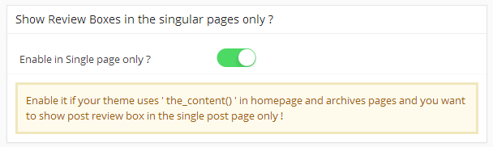
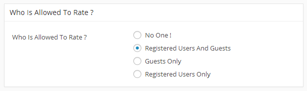
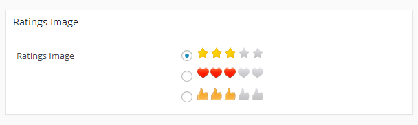
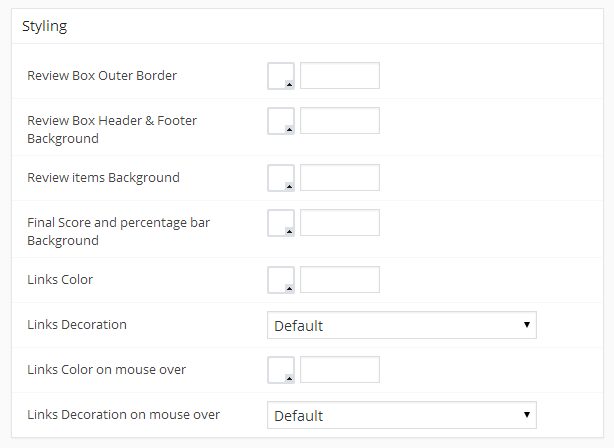
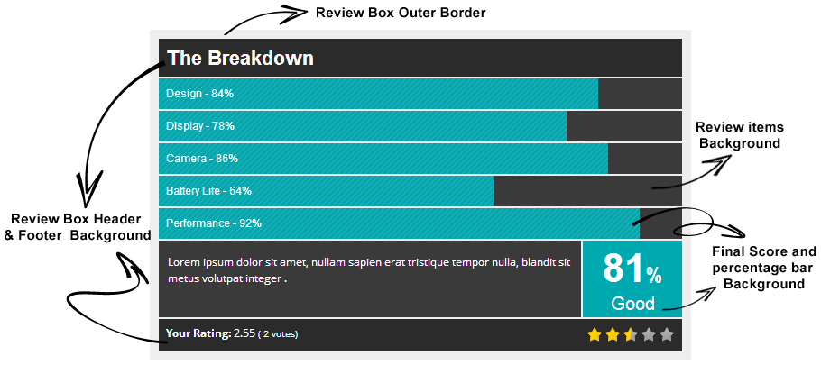
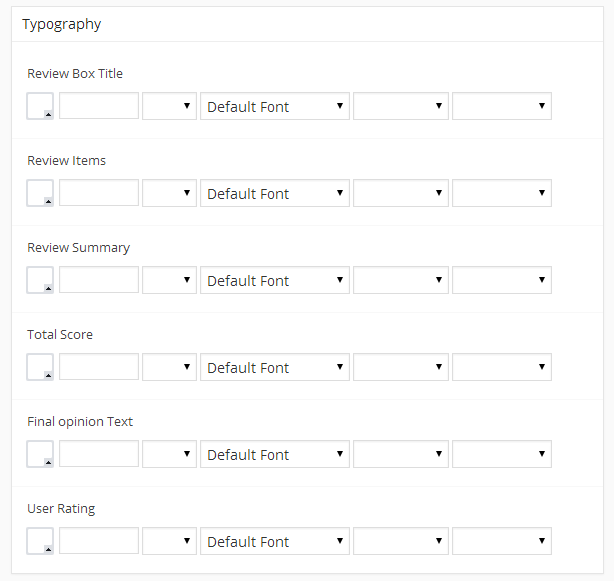
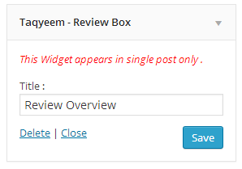
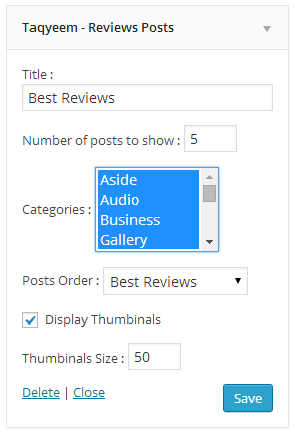

Thank you for purchasing my plugin . Please read this document and explore the item comments and FAQ items for further information and help.
For questions on basic WordPress installation/usage, HTML, JavaScript or CSS editing - please try the ThemeForest forums, W3Schools, the Wordpress Codex or Google as plugin errors/issues get top priority.
You can also install Taqyeem via FTP
You can install Taqyeem via the WordPress plugin uploader without unzipping the file.
Enable this option if your theme uses the_content() in homepage and archives pages and you want to show post review box in the single post page only !
Choose who can rate ? Guests , Registered Users or both also you can disable this faeture by choosing No One !
Choose the image of the "image" rating style .. alos this image will uses in widgets and in the final review score .
From Styling Tab you can chnage all colors and backgrounds of the Review box .
 From Typography Tab you can chnage all fonts , size , weight and colors for the review box elements .
From Advanced Settings Tab you can Import and Export the plugin settings . Just copy the text appears in the Export area and to import the settings paste the exported text in the import area and click Save Settings Button
Check this video
If you play to insert the Review Box in post or page text, shortcodes are the way to go. You'll need to enter the code in the place you want in the post content area .
[taq_review]
To display the final score of the post review in your theme template .
wp-content/themes/<YOUR THEME NAME>/loop.php<?php while (have_posts()) : the_post(); ?><?php if(function_exists('taqyeem_get_score')) {
taqyeem_get_score();
} ?><?php if(function_exists('taqyeem_get_score')) {
taqyeem_get_score( $post_id );
} ?>To display the post review box in the sidebar you can use " Taqyeem - Review Box " widget
Use " Taqyeem - Reviews Posts " widget to display best reviews , most recent reviews or random reviews
